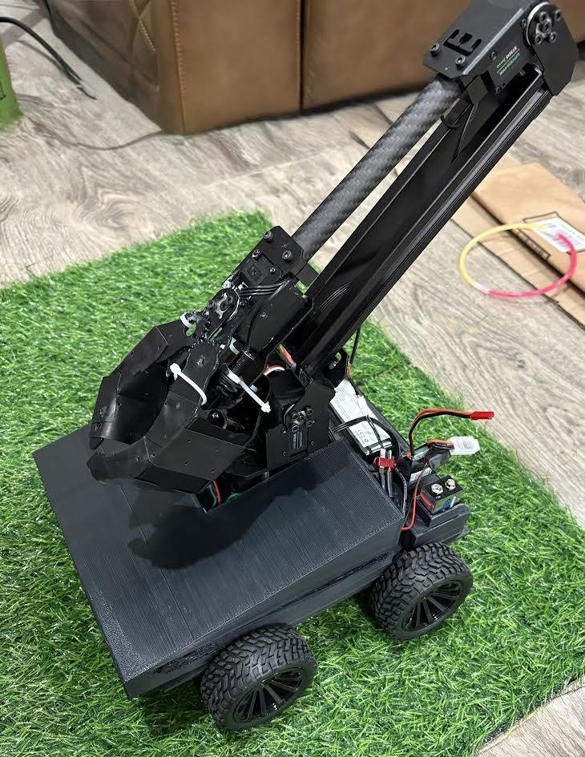
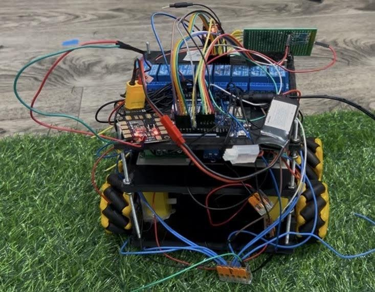
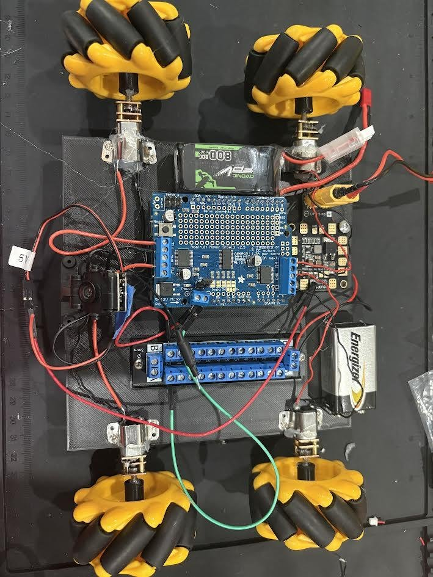
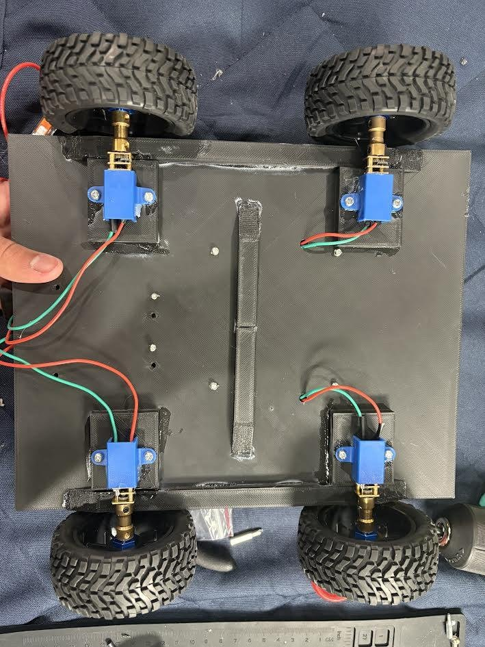
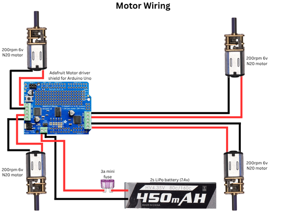
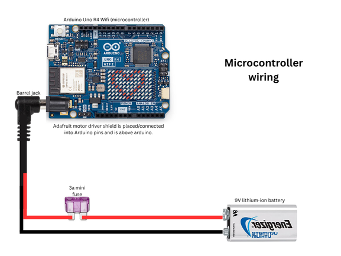
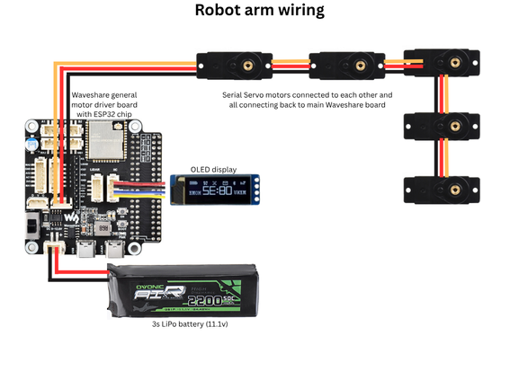
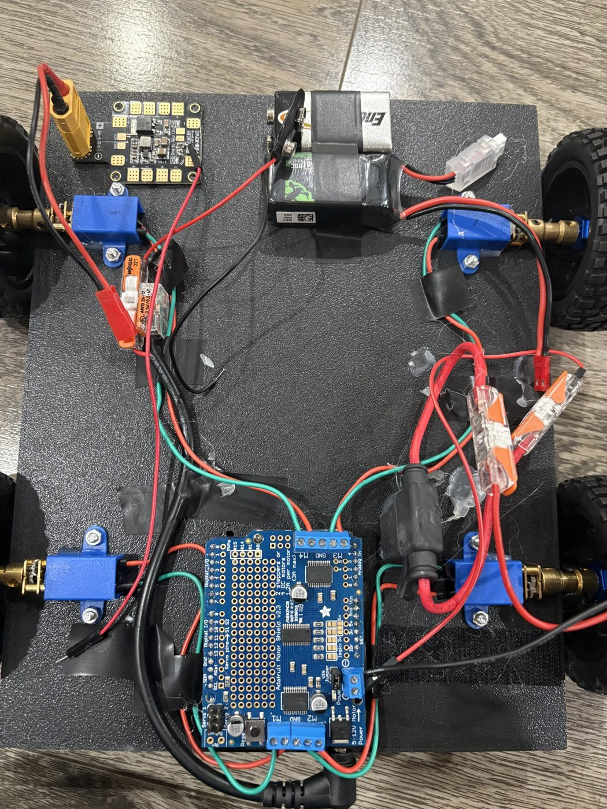
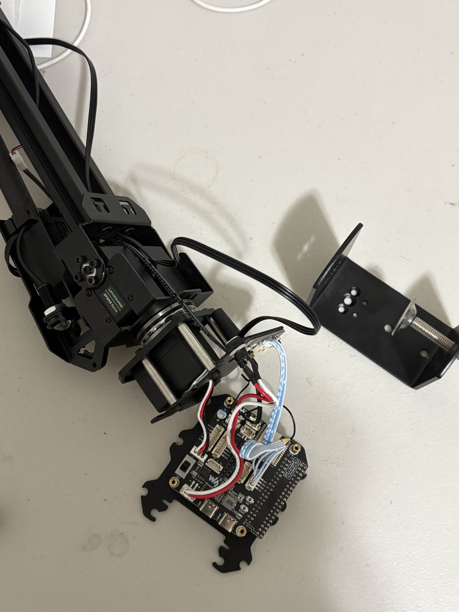

TSA Robotics: 4WD Robot with 4-Joint Arm

Overview
The TSA Robotics challenge asks for a remote-controlled robot that picks up objects from source totes and places them in destination totes under a time limit. I built three complete versions of the robot. Each one was tested, its failures written down, and those failures drove the next design. The final robot pairs a four-motor drivetrain with a modified four-joint arm and is driven over Wi-Fi from a browser joystick and an Xbox controller.
What this project accomplished
- Cut the electronics from a relay network (an 8-channel relay board, two 4-channel relay modules, and several 9 V packs) down to a single stacked motor shield.
- Wrote C++ firmware that turns the Arduino into its own Wi-Fi access point, serves a joystick control page, and converts joystick input into four wheel speeds.
- Wrote a Python controller program that maps Xbox joysticks to four arm joints with dead zones, joint limits, and change-only command sending.
- Split power into three isolated supplies (logic, drivetrain, arm) so the arm servos can't brown out the drive.
- Solved tipping and a turning-torque shortfall through weight redistribution, gear-motor selection, and tire choice.
Final design at a glance
| Microcontroller | Arduino Uno R4 WiFi |
|---|---|
| Motor driver | Adafruit Motor Shield (4 DC channels, I2C) |
| Drivetrain | 4WD, four 200 RPM N20 gear motors, 76 mm RC rubber tires |
| Arm | Modified Waveshare RoArm M2-S: serial bus servos (base, shoulder, elbow, gripper), ESP32-based driver board |
| Power | 9 V Li-ion (Arduino) · 3S 800 mAh LiPo (drivetrain) · 3S 2200 mAh LiPo (arm) |
| Structure | 3D-printed PLA 8 × 10 in base with cross-bracing and partial enclosure; aluminum and carbon-fiber arm members |
| Control | Browser joystick (drive) and Xbox controller via laptop (arm), both over Wi-Fi HTTP |
Design iterations
Design 1: Relay-switched prototype
The first robot switched four TT motors (80 RPM) on and off through an 8-channel relay board. Arduino digital pins toggled each relay's ground, and two 4-channel relay modules with handheld remotes signaled the next move. Three stacked decks held the mecanum-wheel drive, the relay modules and 9 V batteries, and the Arduino with a 2S LiPo.
What testing showed: the robot was too heavy to turn and barely drove forward, there was no room or weight budget left for an arm, missing 9 V connectors caused frequent power loss, and the wiring was too tangled to debug. Relays can only switch motors fully on or off, so there was also no speed control. The fix was not to patch this design but to rethink the electronics entirely.

Design 2: Motor-shield redesign
Researching alternatives led me to the Adafruit Motor Shield, which plugs directly onto the Arduino and drives all four motors with bidirectional, speed-controlled outputs. The electronics shrank to the Arduino, the shield, four 100 RPM N20 motors, a power distribution board fed by a 2S LiPo, and a 9 V battery through a barrel jack for the logic. Everything fit on a single 3D-printed plate with pre-placed holes for each component.
What testing showed: 100 RPM gave plenty of torque but was too slow for competition, the motors' thin shafts let the wheels wobble, and the plastic motor mounts bent under load.

Design 3: Final competition robot
The final version kept the motor-shield architecture and added the arm. I enlarged the base to 8 × 10 in to lower the tipping risk, switched from mecanum to RC car wheels for traction over terrain, replaced the mounts with rigid clamps bonded to the base, added alternating cross supports underneath, and printed a partial enclosure so no electronics are exposed. The arm is a RoArm M2-S that I modified with aluminum and carbon-fiber members to keep it light.
Power was split into three supplies: a 9 V Li-ion for the Arduino, a 3S 800 mAh LiPo for the drivetrain, and a larger 3S 2200 mAh LiPo dedicated to the arm's servos, so high servo current can't sag the voltage the drive and logic depend on.

Wiring
Click a diagram to open it full size.






Problems solved in Design 3
- Tipping when the arm extended. Extending the arm moved the center of mass forward past the front wheels. I moved all batteries to the rear and kept the grabbing zone at the front to counterbalance it.
- Not enough torque to turn. With 300 RPM motors the robot could drive straight but stalled when turning in place, where the tires have to scrub sideways. Lowering speed in code and raising battery voltage didn't fix it. Switching to 200 RPM gear motors (higher gear reduction, more torque at the wheel) did, and swapping very grippy tires for slightly smoother ones reduced the scrubbing friction further.
Software
Drivetrain firmware (C++, Arduino)
The Arduino Uno R4 starts its own Wi-Fi access point and runs a small HTTP server. Connecting to it serves a control page with a touch/mouse joystick that sends its x/y position every 80 ms. The firmware parses each request, clamps the values to ±1, mixes them into four wheel commands, and scales them down together if any exceeds full power so steering ratios are preserved. A small dead band stops the motors from humming near zero, and releasing the joystick sends an explicit stop.
void mecanumDrive(float x, float y, float r) {
float fl = y + x + r, fr = y - x - r;
float rl = y - x + r, rr = y + x - r;
float maxVal = max(max(abs(fl), abs(fr)), max(abs(rl), abs(rr)));
if (maxVal > 1.0) { fl /= maxVal; fr /= maxVal; rl /= maxVal; rr /= maxVal; }
setMotor(motorFL, fl); setMotor(motorFR, fr);
setMotor(motorRL, rl); setMotor(motorRR, rr);
}Arm controller (Python, Pygame)
A laptop script reads an Xbox controller and treats each stick axis as a velocity for one arm joint: base, shoulder, elbow, and gripper. A 0.2 dead zone removes stick drift, every joint is clamped to safe limits, and one button returns the arm to a home pose. To avoid flooding the arm's Wi-Fi link, a JSON command is only sent when some joint has moved by more than 0.01 since the last one.
has_moved = any(abs(current_pos[k] - last_sent_pos[k]) > 0.01 for k in current_pos)
if has_moved:
send_to_robot()
last_sent_pos = current_pos.copy()
time.sleep(0.06)Media
Click a photo to open it full size.




Lessons and next steps
- Control latency was the biggest competition problem. HTTP over Wi-Fi added unpredictable lag. Next version: a dedicated RC transmitter and receiver wired straight to the microcontroller.
- Motor shafts and mounts are still the weak point. Plan to move to stronger DC gear motors with metal screw mounts.
- Revisit mecanum wheels using higher-quality wheels (e.g. goBILDA) to get sideways movement without the slop of the generic ones.
Full documentation
TSA Robotics Portfolio: complete design write-up with all three iterations, wiring, full source code, and parts list.
Open the Google Doc →